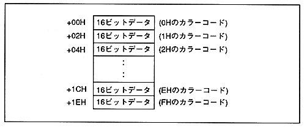

The color lookup table is used to specify the pixel color of the character pattern in the lookup table mode. The color lookup table defines 16 color codes in VRAM as 16-bit data.
In the lookup table mode, the character pattern is defined in the character pattern table at 4bit / pixel, and one of the 16 colors in the color lookup table is selected with the defined 4-bit data. The 16-bit color code of the selected color is written to the frame buffer as the pixel color code.
The size of the color lookup table is 20H (32) Byte. Please write the table from the boundary address of 20HByte unit of VRAM. However, it cannot be defined as 00000H.
* VRAM is up to 7FFFFH. Do not define a color lookup table beyond the 80000H address.
The data written to the color lookup table is valid for both color bank codes and RGB codes. RGB code is MSB = 0. The color bank code is MSB = 0 when RGB codes are mixed, and MSB is arbitrary (0 or 1) when RGB codes are not mixed.
∙ Set MSB according to VDP2 data processing.
Figure 5.2 Color Lookup Table
